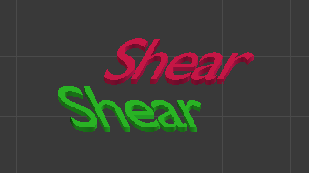
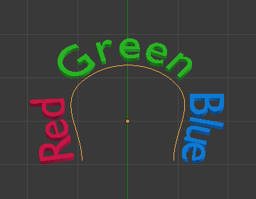
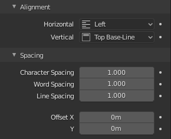
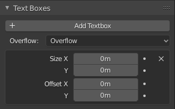
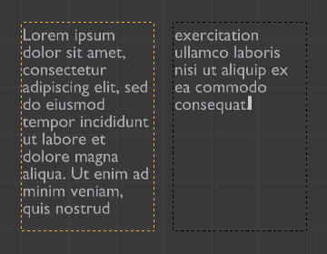

Thuộc tính Text¶
Shape¶
Tham khảo
- Mode:
All Modes
- Panel:
Hầu hết các cài đặt trong panel Shape được dùng chung với các data-block Curves, vui lòng tham khảo ở đó để biết chi tiết.
- Fill Solver
Bộ giải tam giác hóa được dùng khi fill các curve 2D.
- Sweep Line:
Phương pháp tam giác hóa nhanh dành cho các đường viền thông thường. Không hỗ trợ curve tự giao.
- Delaunay:
Sử dụng Constrained Delaunay Triangulation (CDT). Mạnh mẽ hơn và hỗ trợ curve tự giao, đổi lại là chậm hơn.
Quan trọng
Hầu hết các file font chứa curve tự giao. Vì lý do này, nên luôn dùng Delaunay khi làm việc với text object.
- Fill Rule
Quy tắc fill do Fill Solver Delaunay sử dụng để xác định vùng nào được coi là bên trong.
- Even-Odd:
Luân phiên bên trong/bên ngoài dựa trên số lần vượt qua biên. Các vùng chồng lấn có thể triệt tiêu lẫn nhau tùy vào số lần vượt qua.
- Non-Zero:
Xác định bên trong/bên ngoài dựa trên hướng quấn. Các curve chồng lấn có cùng hướng quấn sẽ được fill như một hình hợp nhất, còn hướng quấn ngược nhau có thể tạo ra lỗ.
- Fast Editing
Không fill các chữ cái trong Edit Mode, chỉ hiển thị đường viền của chúng.
Texture Space¶
Mỗi Object có thể có một UV map được tạo tự động, các map này có thể được điều chỉnh tại đây.
Xem Generated UV Properties để biết thêm thông tin.
Geometry¶
Tham khảo
- Mode:
All Modes
- Panel:
- Offset
Dịch chuyển các control point của curve định nghĩa chữ cái, làm cho chúng mảnh hơn hoặc đậm hơn. Hãy thận trọng khi dùng, tính năng này có thể nhanh chóng gây ra artifact...
Extrusion, Taper & Bevel¶
Các cài đặt còn lại của panel đó, dùng để tạo khối thể tích cho chữ cái, cũng được dùng chung với các data-block Curves, vui lòng tham khảo ở đó để biết chi tiết.
Ghi chú
Cách hoạt động của hiệu ứng Taper object phụ thuộc vào cách các curve định nghĩa chữ cái được dựng. Kết quả thường trông khá ngẫu nhiên...
Ghi chú
Bevel được áp dụng lên các curve định nghĩa chữ cái, nghĩa là thường nó sẽ đi theo đường viền của chúng (sẽ có hai curve bevel song song, chứ không phải một curve duy nhất như người ta thường mong đợi).
Font¶
Tham khảo
- Mode:
All Modes
- Panel:
Mặc định Blender đi kèm một font tích hợp sẵn hiển thị trong từng menu data-block của bốn kiểu font. Font tích hợp sẵn luôn hiện hữu và xuất hiện trong danh sách này dưới tên "Bfont". Menu data-block chứa danh sách hiển thị các font hiện đang được tải. Hãy chọn một font cho từng kiểu font.
Để tải một Font khác, nhấp vào một trong các nút Load trong panel Font và điều hướng đến file font. File Browser sẽ gán cho mọi font hợp lệ một biểu tượng chữ "F" hoa.
Nếu bạn chọn một font không được Blender hỗ trợ, bạn sẽ nhận được lỗi Not a valid font.
Ghi chú
Vị trí font trên Unix
Font thường nằm trong /usr/lib/fonts, hoặc một biến thể như /usr/lib/X11/fonts, nhưng không phải lúc nào cũng vậy. Chúng cũng có thể nằm ở các vị trí khác, chẳng hạn /usr/share/local hoặc /usr/local/share, và có thể trong các thư mục con liên quan.
Hãy nhớ rằng cùng một font sẽ được áp dụng cho tất cả ký tự cùng kiểu trong một văn bản, nhưng mỗi kiểu lại cần một font riêng. Ví dụ, bạn cần tải một font Italics để làm in nghiêng ký tự hoặc từ. Sau khi font được tải, bạn có thể áp dụng "Style" của font đó cho các ký tự đang được chọn hoặc cho toàn bộ object. Nhìn chung, bạn cần tải tối thiểu bốn loại font khác nhau để thể hiện từng kiểu (Normal, Italics, Bold, Bold & Italics).
Điều quan trọng là phải hiểu rằng Blender không quan tâm bạn tải font nào cho các kiểu "normal", "bold" v.v. Chính vì vậy bạn có thể dùng tới bốn font khác nhau trong cùng một văn bản, nhưng bạn phải chọn giữa các kiểu khác nhau của cùng một font, hoặc giữa các font khác nhau. Blender có một số công cụ kiểm soát typography để thay đổi kiểu dáng và bố cục văn bản, nằm trong panel Font.
- Bold
Khi không có văn bản nào được chọn, bật/tắt in đậm cho văn bản mới. Khi có văn bản được chọn, bật/tắt in đậm cho phần văn bản đó.
In đậm cũng có thể được bật/tắt trong 3D Viewport bằng Toggle Bold.
- Italic
Khi không có văn bản nào được chọn, bật/tắt in nghiêng cho văn bản mới. Khi có văn bản được chọn, bật/tắt in nghiêng cho phần văn bản đó.
In nghiêng cũng có thể được bật/tắt trong 3D Viewport bằng Toggle Italic.
- Underline
Khi không có văn bản nào được chọn, bật/tắt gạch chân cho văn bản mới. Khi có văn bản được chọn, bật/tắt gạch chân cho phần văn bản đó.
Gạch chân cũng có thể được bật/tắt trong 3D Viewport bằng Toggle Underline.
Xem thêm cài đặt gạch chân bên dưới.
- Small Caps
Khi không có văn bản nào được chọn, bật/tắt chữ in hoa cỡ nhỏ cho văn bản mới. Khi có văn bản được chọn, bật/tắt chữ in hoa cỡ nhỏ cho phần văn bản đó.
Small Caps cũng có thể được bật/tắt trong 3D Viewport bằng Toggle Small Caps.
Văn bản cũng có thể được đặt thành small caps bằng cách chọn nó rồi dùng Toggle Small Caps.
Kích thước của Small Caps có thể được thay đổi bằng Small Caps Scale.
Transform¶
- Size
Điều khiển kích thước của toàn bộ văn bản (không có cách nào điều khiển kích thước từng ký tự độc lập). Tuy nhiên, lưu ý rằng các ký tự dùng font khác nhau (kiểu khác nhau, xem bên dưới) có thể có kích thước hiển thị khác nhau.
- Shear
Điều khiển độ nghiêng của toàn bộ văn bản. Dù trông có vẻ tương tự, đây không phải là kiểu in nghiêng.

Ví dụ về Shear.¶

- Object Font
Cho phép dùng các object riêng lẻ để render font — bạn có thể tự tạo/model font phức tạp của riêng mình ngay trong Blender! Trường này dùng để chọn tiền tố tên của các object ("họ" object) nhằm định vị các ký tự riêng lẻ dùng cho việc gõ chữ. Đây là một quy trình khá phức tạp, vì vậy dưới đây là các bước chi tiết:
Tạo các ký tự của font, mỗi ký tự có thể là bất kỳ loại object nào (mesh, curve, v.v.). Tất cả phải có tên theo quy ước đặt tên: "tiền tố chung" theo sau là "tên ký tự" (ví dụ "ft.a", "ft.b", v.v.).
Với text object, hãy bật Instancing Vertices.
Trong tab Font, điền trường Object Font với "tiền tố chung" của các object "font". Bây giờ, mỗi khi một ký tự trong văn bản khớp với phần hậu tố trong tên của một object "font", object đó sẽ được nhân đôi lên ký tự này.
Ghi chú
Các object được nhân đôi sao cho tâm của chúng nằm ở góc dưới bên phải của ký tự tương ứng.
- Text on Curve
Chọn một curve object để text object bám theo.

Text đặt trên curve.¶
Mẹo
Bạn nên dùng Curve modifier thay thế, vốn cung cấp nhiều khả năng kiểm soát hơn và là cách chuẩn để đạt được hiệu ứng kiểu này trong Blender hiện đại.

- Underline Position
Cho phép bạn dịch chuyển vị trí gạch chân theo phương dọc.
- Underline Thickness
Điều khiển độ dày của gạch chân.
- Small Caps Scale
Mức thu nhỏ kích thước được áp dụng cho chữ in hoa khi dùng small caps.
Paragraph¶
Tham khảo
- Mode:
All
- Panel:
Panel Paragraph chứa các cài đặt cho căn lề và khoảng cách của văn bản.

Panel Paragraph.¶
Alignment¶
- Horizontal
- Left:
Căn văn bản về bên trái của khung khi dùng khung, nếu không sẽ dùng origin của text object làm điểm bắt đầu của văn bản (văn bản phát triển về bên phải).
- Center:
Căn giữa văn bản trong khung khi dùng khung, nếu không sẽ dùng origin của text object làm điểm giữa của văn bản (văn bản phát triển đều sang trái và phải).
- Right:
Căn văn bản về bên phải của khung khi dùng khung, nếu không sẽ dùng origin của text object làm điểm kết thúc của văn bản (văn bản phát triển về bên trái).
- Justify:
Chỉ căn đều một dòng khi dòng đó kết thúc bởi ngắt từ (không phải bởi ký tự xuống dòng), và dùng khoảng trắng thay vì giãn cách ký tự (kerning) để lấp đầy các dòng.
- Flush:
Luôn căn đều dòng, kể cả khi dòng vẫn đang được gõ. Dùng giãn cách ký tự (kerning) để lấp đầy các dòng.
Ghi chú
Cả Justify và Flush chỉ hoạt động bên trong các khung.
- Vertical
- Top:
Khi có text box, căn đỉnh của văn bản với đỉnh của khung.
Khi không có text box, căn đỉnh của văn bản với origin của object, và văn bản phát triển xuống dưới.
- Top Baseline:
Khi có text box, căn baseline 'đỉnh' của văn bản với đỉnh của khung.
Khi không có text box, căn baseline thực của văn bản với origin của object, và văn bản phát triển xuống dưới.
Ghi chú
Sự khác biệt về điểm tham chiếu ở dòng đầu tiên tùy theo việc có dùng box hay không quả thật dễ gây nhầm lẫn.
- Middle:
Khi có text box, căn giữa văn bản trong khung.
Khi không có text box, căn giữa văn bản trên origin của object, và văn bản phát triển đều theo cả hai hướng trên và dưới.
- Bottom Baseline:
Khi có text box, căn baseline của văn bản với đáy của khung.
Khi không có text box, căn baseline của văn bản với origin của object, và văn bản phát triển lên trên.
- Bottom:
Khi có text box, căn đáy của văn bản với đáy của khung.
Khi không có text box, căn đáy của văn bản với origin của object, và văn bản phát triển lên trên.
Spacing¶
- Character Spacing
Hệ số scales độ rộng khoảng cách giữa các ký tự (kerning).
Trong Edit Mode ở 3D Viewport, bạn cũng có thể điều khiển kerning riêng tại vị trí con trỏ văn bản bằng cách nhấn Alt-Left / Alt-Right để giảm/tăng.
- Word Spacing
Hệ số scales độ rộng khoảng trắng giữa các từ.
- Line Spacing
Hệ số scales khoảng cách dọc giữa các dòng.
- Offset X, Y
Các cài đặt này điều khiển offset X và Y của vị trí văn bản trong object. Giá trị này áp dụng tương đối so với origin của object, cho toàn bộ văn bản hoặc, khi dùng text box, cho từng khung.
Text Boxes¶
Tham khảo
- Mode:
All
- Panel:
Text box (hay khung) cho phép bạn phân bổ văn bản vào các vùng hình chữ nhật bên trong một text object duy nhất. Mỗi text object được phép có số lượng khung tùy ý, có thể tự do di chuyển và thay đổi kích thước.
Văn bản liên tục chảy từ khung có số thứ tự thấp nhất đến khung có số thứ tự cao nhất, với văn bản trong mỗi khung được ngắt từ. Văn bản chảy sang khung khác khi khung có số thấp hơn không còn đủ chỗ chứa. Nếu đã đến khung cuối cùng, văn bản sẽ tràn ra ngoài (theo mặc định, xem các tùy chọn bên dưới).

Panel Text Boxes.¶
- Add Textbox
Chèn một khung mới ngay sau khung hiện tại (theo thứ tự dòng chảy văn bản). Khung mới sẽ có cùng kích thước và vị trí với khung đang được chọn.
- (Remove Text Block)
Xóa khung hiện tại.
- Overflow
Cách xử lý văn bản tràn khỏi không gian khả dụng trong các box đã định nghĩa.
- Overflow:
Đơn giản là để văn bản tràn ra khỏi box cuối cùng.
- Scale to Fit:
Scale văn bản để vừa với không gian khả dụng.
- Truncate:
Ẩn phần cuối của văn bản không vừa với không gian khả dụng.
Ghi chú
Việc cắt bớt chỉ xảy ra trong Object Mode; trong Edit Mode toàn bộ văn bản vẫn hiển thị (và tràn ra nếu cần).
- Size X, Y
Chỉ định chiều rộng và chiều cao của text box; nếu đặt bằng không thì sẽ không có ngắt từ (giá trị bị bỏ qua, và toàn bộ hệ thống text box bị tắt nếu tất cả đều đặt bằng kích thước rỗng).
- Offset X, Y
Điều khiển offset X và Y của khung, tức là vị trí của nó.

Nhiều cột, văn bản chảy giữa các box.¶